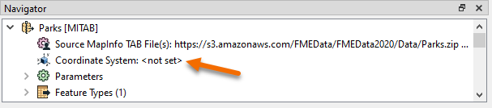
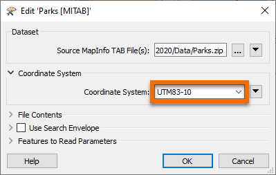
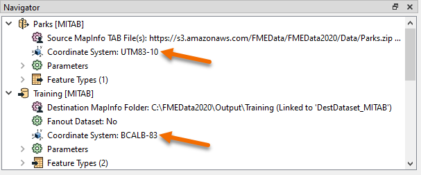
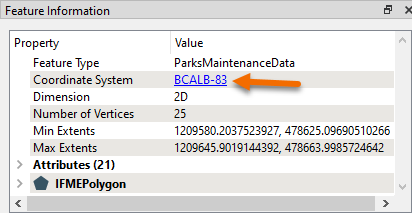

Learning Objectives
After completing this unit, you’ll be able to:
- Use coordinate system parameters to reproject spatial data.
- Select features in the Data Inspector to inspect coordinate system information.
- Use the Reprojector transformer to reproject spatial data.
Resources
Exercise
In this exercise, you are working as a GIS analyst for a city government. You are working with spatial data consisting of the boundaries of parks in the city, along with some attributes. The data is stored in MapInfo TAB format as polygons (vector data).
The parks team has decided that the output data should be in an Albers Equal Area projection (coordinate system = BCALB-83). They think it will take ages to set this up! We'll show them differently.
1) Start FME Workbench
Start FME Workbench 2020.1 and open the starting workspace.
This existing workspace reads in the parks data, does some schema editing, filters out dog parks, calculates the park areas, calculates the average park area, and creates a label feature type, all before writing out back to MITAB.
2) Edit Source (Reader) Coordinate System
In the Navigator window locate the Parks [MITAB] reader, and expand its list of settings.
Locate the setting labeled ‘Coordinate System’. The original value should be <not set>:

Double-click the reader Coordinate System parameter to open an edit dialog.
In the Coordinate System field enter the name UTM83-10 or select it from the Coordinate System Gallery by selecting "More Coordinate Systems..." from the bottom of the drop-down list:

3) Edit Destination (Writer) Coordinate System
Now locate the coordinate system setting for the destination (writer) dataset.
Again the current value should be the default of <not set>.
Double-click the parameter and enter the coordinate system name BCALB-83 or select it from the Coordinate System Gallery by selecting "More Coordinate Systems..." from the bottom of the drop-down list.
The Navigator window will now look like this:

4) Run the Workspace
Save and then run the workspace.
In the log file you should be able to find:
FME Configuration: Source coordinate system for reader MITAB_1[MITAB] set to `UTM83-10'
...
FME Configuration: Destination coordinate system set to `BCALB-83'
5) Inspect the Output
Open the newly reprojected dataset and select a feature. The Feature Information window should report that the data is now in BCALB-83. Optionally, click on the coordinate system name in that window; a new dialog will open to display all of the coordinate system parameters.

Challenge
Instead of using the reader/writer parameters in the Navigator window, why not try this exercise using the Reprojector (or CSMapReprojector) transformer? Where should the transformer be placed in the workspace? Why is this important?